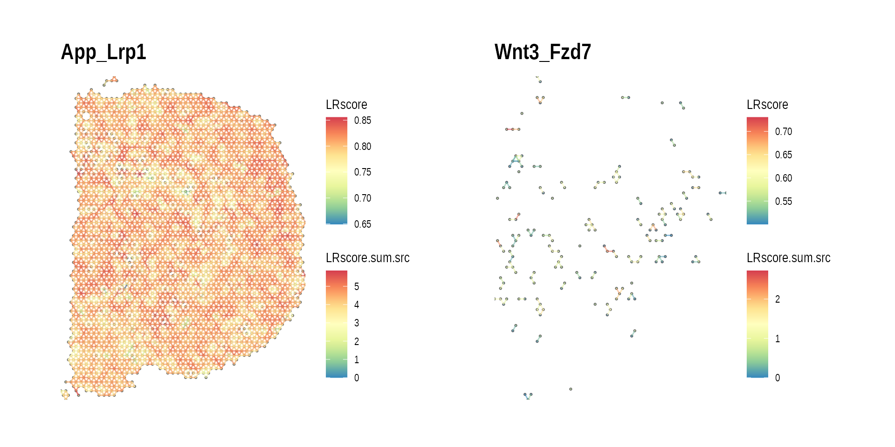
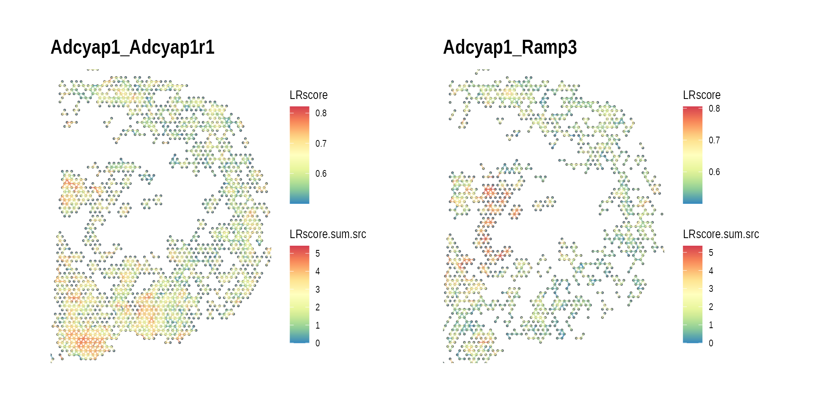
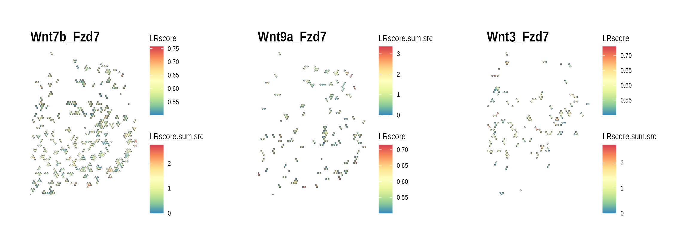
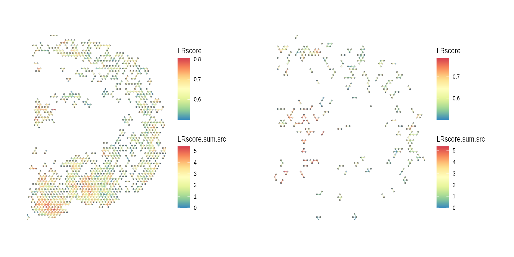
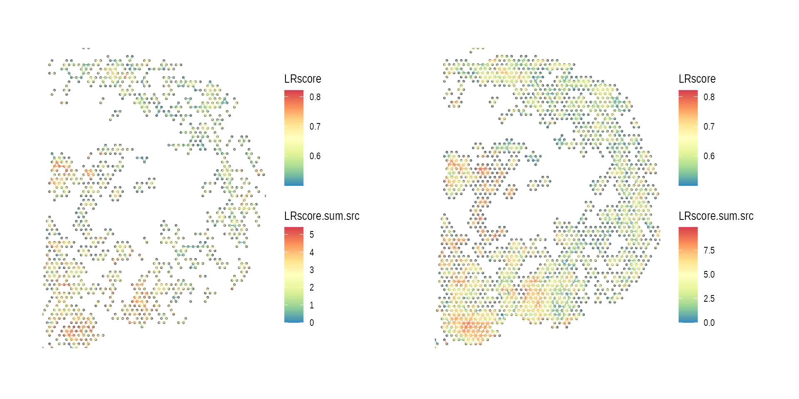
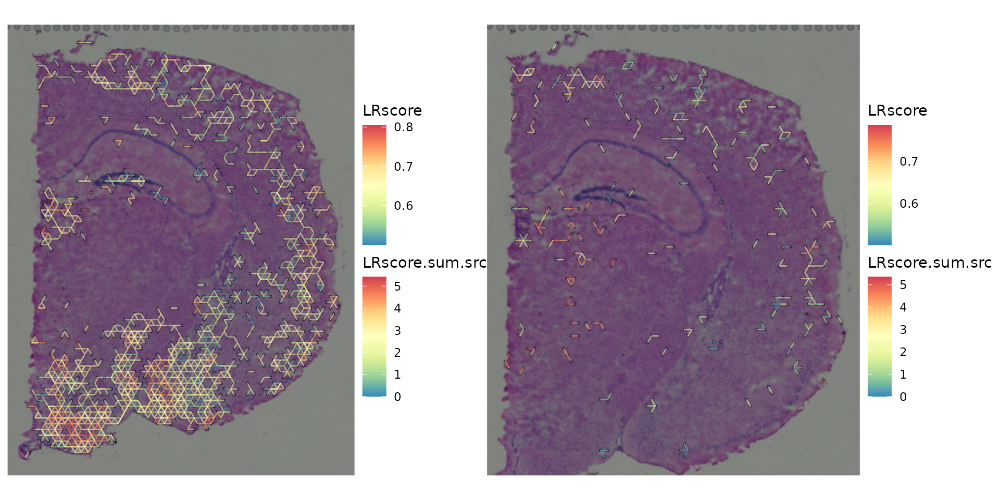
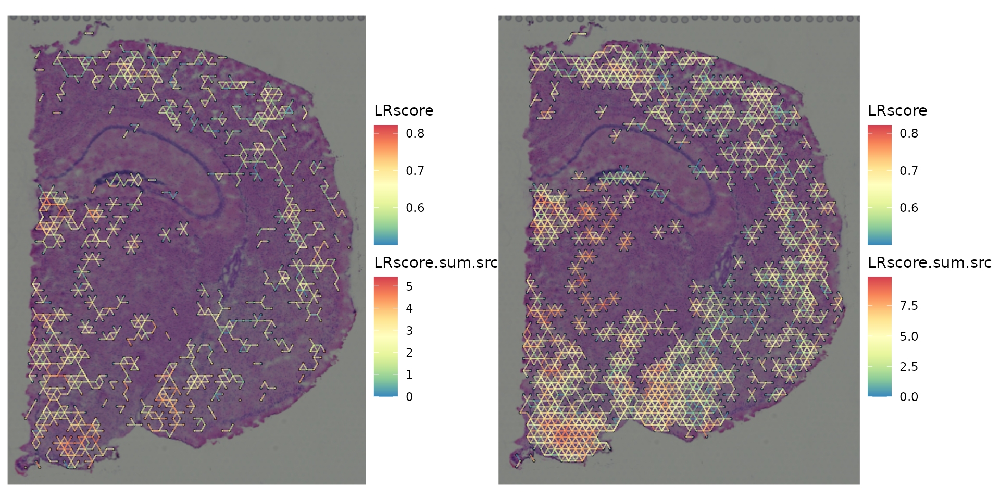
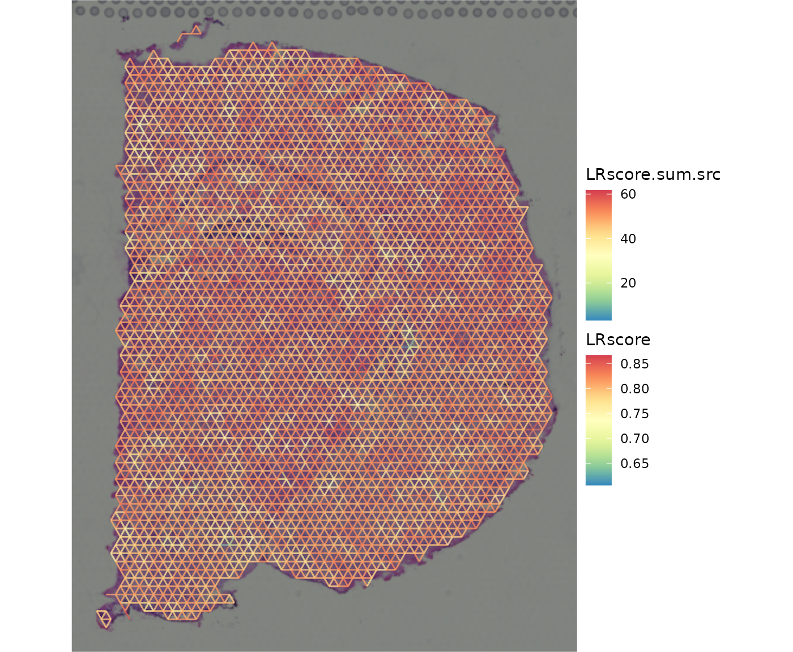

library(spatialCCC)
#> Warning: replacing previous import 'S4Arrays::makeNindexFromArrayViewport' by
#> 'DelayedArray::makeNindexFromArrayViewport' when loading 'SummarizedExperiment'
#> Warning: replacing previous import 'S4Arrays::makeNindexFromArrayViewport' by
#> 'DelayedArray::makeNindexFromArrayViewport' when loading 'HDF5Array'
library(dplyr)
#>
#> Attaching package: 'dplyr'
#> The following objects are masked from 'package:stats':
#>
#> filter, lag
#> The following objects are masked from 'package:base':
#>
#> intersect, setdiff, setequal, union
library(ggplot2)
library(patchwork)- Then, load built-in LR database.
set.seed(100)
LRdb_m <-
get_LRdb("mouse", n_samples = 100)
LRdb_full <-
get_LRdb("mouse")
LRdb <- LRdb_m
#LRdb <- LRdb_full- Load an example Visium spatial transcriptomic data
# absolute path to "example" spatial transcriptomic data
data_dir <- spatialCCC_example("example")
spe_brain <-
SpatialExperiment::read10xVisium(samples = data_dir,
type = "HDF5",
data = "filtered")
# Log-Normalize
spe_brain <- scater::logNormCounts(spe_brain)Cell-cell communication analysis
- Compute Cell-Cell Communications over ligand-receptor pairs
#future::plan(future::multisession, workers = 8)
ccc_graph_list <-
compute_spatial_ccc_graph_list(spe = spe_brain,
assay_name = "logcounts",
LRdb = LRdb)
#future::plan(future::sequential)- Summarize spatial CCC graphs by LR
ccc_graph_summary_tbl <-
ccc_graph_list %>%
to_LR_summary_tbl() %>%
arrange(desc(perc_rank))
ccc_graph_summary_tbl
#> # A tibble: 41 × 20
#> LR L R n LRscore n_perc_rank LRscore_perc_rank perc_rank
#> <chr> <chr> <chr> <int> <dbl> <dbl> <dbl> <dbl>
#> 1 App_Lrp1 App Lrp1 17430 0.806 1 1 1
#> 2 Apoe_Trem2 Apoe Trem2 6937 0.767 0.875 0.975 0.924
#> 3 Nlgn2_Nrxn1 Nlgn2 Nrxn1 14289 0.741 0.975 0.875 0.924
#> 4 Calm2_Cacn… Calm2 Cacn… 8105 0.760 0.9 0.925 0.912
#> 5 Apoe_Ldlr Apoe Ldlr 5608 0.764 0.85 0.95 0.899
#> 6 S100a1_Ryr2 S100… Ryr2 10689 0.690 0.95 0.825 0.885
#> 7 Ncam1_Fgfr1 Ncam1 Fgfr1 9640 0.688 0.925 0.8 0.860
#> 8 Calm2_Mylk Calm2 Mylk 4247 0.750 0.8 0.9 0.849
#> 9 Adcyap1_Ad… Adcy… Adcy… 4172 0.644 0.775 0.75 0.762
#> 10 Adam17_Apl… Adam… Aplp2 3338 0.692 0.675 0.85 0.757
#> # ℹ 31 more rows
#> # ℹ 12 more variables: perc_group <chr>, graph_n_nodes <int>,
#> # graph_n_edges <dbl>, graph_component_count <dbl>, graph_motif_count <int>,
#> # graph_diameter <dbl>, graph_un_diameter <dbl>, graph_mean_dist <dbl>,
#> # graph_circuit_rank <dbl>, graph_reciprocity <dbl>, graph_clique_num <int>,
#> # graph_clique_count <int>
top_LR <-
ccc_graph_summary_tbl %>%
pull(LR) %>%
head(n = 1)
bottom_LR <-
ccc_graph_summary_tbl %>%
pull(LR) %>%
tail(n = 1)
gp_ccc_graph_top_LR <-
plot_spatial_ccc_graph(ccc_graph_list[[top_LR]],
graph_layout = "spatial",
edge_color = "LRscore",
node_color = "LRscore.sum.src") +
ggtitle(top_LR)
gp_ccc_graph_bottom_LR <-
plot_spatial_ccc_graph(ccc_graph_list[[bottom_LR]],
graph_layout = "spatial",
edge_color = "LRscore",
node_color = "LRscore.sum.src") +
ggtitle(bottom_LR)
wrap_plots(gp_ccc_graph_top_LR, gp_ccc_graph_bottom_LR)
- CCC graph summary table only with ligands or receptors with multiple occurrences
L_high_freq <-
ccc_graph_summary_tbl %>%
group_by(L) %>%
summarise(n = n(), .groups = "drop") %>%
dplyr::filter(n > 1) %>%
dplyr::arrange(desc(n)) %>%
pull(L)
L_high_freq
#> [1] "Adcyap1" "Apoe" "Calm2" "S100a1" "Sema5a"
R_high_freq <-
ccc_graph_summary_tbl %>%
group_by(R) %>%
summarise(n = n(), .groups = "drop") %>%
dplyr::filter(n > 1) %>%
dplyr::arrange(desc(n)) %>%
pull(R)
R_high_freq
#> [1] "Fzd7" "Robo3"
ccc_graph_summary_tbl %>%
dplyr::filter(L %in% L_high_freq | R %in% R_high_freq)
#> # A tibble: 15 × 20
#> LR L R n LRscore n_perc_rank LRscore_perc_rank perc_rank
#> <chr> <chr> <chr> <int> <dbl> <dbl> <dbl> <dbl>
#> 1 Apoe_Trem2 Apoe Trem2 6937 0.767 0.875 0.975 0.924
#> 2 Calm2_Cacn… Calm2 Cacn… 8105 0.760 0.9 0.925 0.912
#> 3 Apoe_Ldlr Apoe Ldlr 5608 0.764 0.85 0.95 0.899
#> 4 S100a1_Ryr2 S100… Ryr2 10689 0.690 0.95 0.825 0.885
#> 5 Calm2_Mylk Calm2 Mylk 4247 0.750 0.8 0.9 0.849
#> 6 Adcyap1_Ad… Adcy… Adcy… 4172 0.644 0.775 0.75 0.762
#> 7 Sema5a_Plx… Sema… Plxn… 3869 0.609 0.75 0.55 0.642
#> 8 Sema5a_Plx… Sema… Plxn… 2054 0.622 0.575 0.625 0.599
#> 9 S100a1_Ryr1 S100… Ryr1 1060 0.637 0.45 0.675 0.551
#> 10 Adcyap1_Ra… Adcy… Ramp3 2039 0.608 0.55 0.525 0.537
#> 11 Wnt7b_Fzd7 Wnt7b Fzd7 528 0.583 0.25 0.2 0.224
#> 12 Slit2_Robo3 Slit2 Robo3 687 0.578 0.325 0.125 0.202
#> 13 Wnt9a_Fzd7 Wnt9a Fzd7 193 0.566 0.075 0.025 0.0433
#> 14 Slit3_Robo3 Slit3 Robo3 263 0.557 0.15 0 0
#> 15 Wnt3_Fzd7 Wnt3 Fzd7 144 0.588 0 0.325 0
#> # ℹ 12 more variables: perc_group <chr>, graph_n_nodes <int>,
#> # graph_n_edges <dbl>, graph_component_count <dbl>, graph_motif_count <int>,
#> # graph_diameter <dbl>, graph_un_diameter <dbl>, graph_mean_dist <dbl>,
#> # graph_circuit_rank <dbl>, graph_reciprocity <dbl>, graph_clique_num <int>,
#> # graph_clique_count <int>- Spatial CCC graph with ligand with multiple occurences
high_L_LR_list <-
ccc_graph_summary_tbl %>%
dplyr::filter(L == L_high_freq[1]) %>%
pull(LR) %>%
setNames(nm = .)
gp_list <-
high_L_LR_list %>%
purrr::map(function(lr) {
plot_spatial_ccc_graph(
ccc_graph_list[[lr]],
graph_layout = "spatial",
edge_color = "LRscore",
clip = FALSE
) +
ggtitle(lr)
})
wrap_plots(gp_list)
high_R_LR_list <-
ccc_graph_summary_tbl %>%
dplyr::filter(R == R_high_freq[1]) %>%
pull(LR) %>%
setNames(nm = .)
gp_list <-
high_R_LR_list %>%
purrr::map(function(lr) {
plot_spatial_ccc_graph(
ccc_graph_list[[lr]],
graph_layout = "spatial",
edge_color = "LRscore",
clip = FALSE
) +
ggtitle(lr)
})
wrap_plots(gp_list)
ccog_diff_1 <-
ccc_graph_diff(ccc_graph_list[[high_L_LR_list[1]]],
ccc_graph_list[[high_L_LR_list[2]]])
ccog_diff_2 <-
ccc_graph_diff(ccc_graph_list[[high_L_LR_list[2]]],
ccc_graph_list[[high_L_LR_list[1]]])
ccog_union <-
ccc_graph_union(ccc_graph_list[[high_L_LR_list[1]]],
ccc_graph_list[[high_L_LR_list[2]]])
ccog_intersect <-
ccc_graph_intersect(ccc_graph_list[[high_L_LR_list[1]]],
ccc_graph_list[[high_L_LR_list[2]]])
gp_list <-
list(ccog_diff_1, ccog_diff_2) %>%
purrr::map(function(ccog) {
plot_spatial_ccc_graph(ccog,
graph_layout = "spatial")
})
wrap_plots(gp_list)
gp_list <-
list(ccog_diff_1, ccog_diff_2) %>%
purrr::map(function(ccog) {
plot_spatial_ccc_graph(ccog,
graph_layout = "spatial")
})
wrap_plots(gp_list)
gp_list <-
list(intersect = ccog_intersect, union = ccog_union) %>%
purrr::map(function(ccog) {
plot_spatial_ccc_graph(ccog,
graph_layout = "spatial")
})
wrap_plots(gp_list)
gp_list <-
list(ccog_diff_1, ccog_diff_2) %>%
purrr::map(function(ccog) {
plot_spatial_ccc_graph(ccog,
graph_layout = "spatial",
tissue_img = SpatialExperiment::imgRaster(spe_brain))
})
wrap_plots(gp_list)
gp_list <-
list(intersect = ccog_intersect, union = ccog_union) %>%
purrr::map(function(ccog) {
plot_spatial_ccc_graph(ccog,
graph_layout = "spatial",
tissue_img = SpatialExperiment::imgRaster(spe_brain))
})
wrap_plots(gp_list)
ccog_flattened <-
flatten_ccc_graph_list(ccc_graph_ls = ccc_graph_list)
plot_spatial_ccc_graph(
ccog_flattened,
tissue_img = SpatialExperiment::imgRaster(spe_brain),
graph_layout = "spatial",
node_color = "LRscore.sum.src",
edge_color = "LRscore",
# node_size = 1.6,
node_alpha = 0,
which_on_top = "edge"
) 